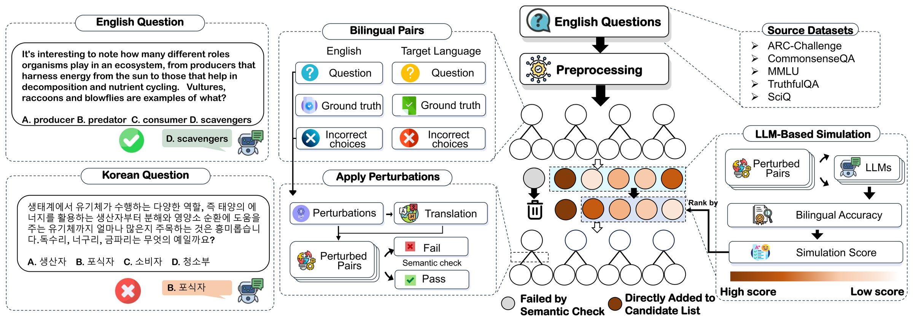

Why Multilingual LLMs Fail Across Languages: an automatic probe that surfaces over 50% accuracy drops across 16 languages, even for GPT-4o.
ACL 2025 (Long Paper)
1 MBZUAI · 2 University of Notre Dame · 3 University of Southern California
* Equal contribution · † Corresponding author:
xiuying.chen@mbzuai.ac.ae,
xzhang33@nd.edu

Multilingual LLMs can answer a question correctly in English yet get the very same question wrong in another language. Cross-Lingual Pitfalls makes this measurable: across 16 languages, most models lose over 50% of their accuracy once a question leaves English—and the failures are systematic, not noise.
In practice this is a silent failure mode that standard, English-centric evaluation misses: a model can look near-perfect on English benchmarks yet collapse once the same question is posed in Hindi, Arabic, or Swahili—GPT-4o alone drops nearly 30% in Chinese. Cross-Lingual Pitfalls turns the search for these gaps into an automatic procedure. Instead of relying on a fixed, translated test set, it actively generates bilingual (English ↔ target-language) question pairs designed to maximize the accuracy gap, exposing weaknesses that static, English-centric evaluations tend to miss. The result is a reusable, 16-language dataset of 6,713 bilingual pairs (built from five English QA benchmarks: MMLU, ARC, CommonsenseQA, TruthfulQA, and SciQ) and a cheap, scalable diagnostic that works even on state-of-the-art models such as GPT-4o and Claude-3.5-Sonnet.
In the authors' words, the work makes three contributions:
Large Language Models (LLMs) have achieved remarkable success in Natural Language Processing (NLP), yet their cross-lingual consistency remains a significant challenge. This paper introduces a novel methodology for efficiently identifying inherent cross-lingual weaknesses in LLMs. Our approach leverages beam search and LLM-based simulation to generate bilingual question pairs that expose performance discrepancies between English and target languages. We construct a new dataset of over 6,000 bilingual pairs across 16 languages using this methodology, demonstrating its effectiveness in revealing weaknesses even in state-of-the-art models. The extensive experiments demonstrate that our method precisely and cost-effectively pinpoints cross-lingual weaknesses, consistently revealing over 50% accuracy drops in target languages across a wide range of models. Moreover, further experiments investigate the relationship between linguistic similarity and cross-lingual weaknesses, revealing that linguistically related languages share similar performance patterns and benefit from targeted post-training. Code is available at https://github.com/xzx34/Cross-Lingual-Pitfalls.
Models answer almost everything correctly in English—accuracy sits at nearly 100%—yet most suffer an average accuracy drop of over 50% once the same questions are posed in a target language. Because mainstream multilingual LLM evaluation is largely English-centric and built on static, translated benchmarks, this gap stays invisible: a leaderboard-topping model can be quietly unreliable for most of its users. That invisibility is exactly why the authors turn to automatic, adversarial probing rather than a fixed test set.
The weakness is not a small-model artifact. Averaged across models, moving a question from English to Chinese drops accuracy by nearly 60%, and even GPT-4o still loses nearly 30% of its accuracy in Chinese. Scale and frontier capability narrow the cross-lingual performance gap but do not close it, so cross-lingual consistency has to be measured directly rather than assumed from a strong English score.
The failures are not random noise; they are structured by linguistic similarity. Linguistically related languages share similar failure patterns, and targeted post-training on one language transfers to its relatives. For deployment this is encouraging: improvement effort can be organized around a language family rather than spent language by language, making mitigation far more efficient.
The burden is unevenly distributed. The sharpest accuracy drops appear in low-resource languages such as Amharic, Yoruba, Swahili, and Zulu, where even state-of-the-art LLMs degrade steeply relative to English. These languages serve large speaker communities, so the cross-lingual performance gap is also an equity problem: the users least served by English-centric systems are the ones the models fail most often.
Surfacing a weakness is inexpensive: identifying a bilingual pair that exposes a failure costs less than $0.05 for most languages. At that price the method is less a one-off benchmark than a continuous, dynamic diagnostic—teams can re-probe each new model or checkpoint and watch the cross-lingual gap, instead of trusting a static, possibly contaminated test set.
Cross-Lingual Pitfalls combines beam search with LLM-based simulation to generate adversarial bilingual question pairs that maximize the English-vs-target accuracy gap, going beyond static translated benchmarks such as MGSM or Global-MMLU.
Starting from English benchmark questions (drawn from MMLU, ARC, CommonsenseQA, TruthfulQA, and SciQ), the method uses beam search as a perturbation and search strategy, while an LLM-based simulation stands in for the target model to estimate how a candidate question will be answered in English versus the target language. Each step keeps the variants that widen the English-vs-target accuracy gap, so the search converges on bilingual (English ↔ target-language) pairs where the model is right in English and wrong in the target language. Because the search is gap-maximizing and fully automatic, it produces a dynamic benchmark that adapts to each model instead of reusing one fixed, English-centric test set. There is no branded acronym; the work is referred to simply as Cross-Lingual Pitfalls.
The probing method yields a reusable resource: 6,713 bilingual question pairs spanning 16 languages, built from five English QA benchmarks (MMLU, ARC, CommonsenseQA, TruthfulQA, and SciQ) and available on both the Hugging Face Hub and the GitHub repository. They cover a broad range of languages, with the widest cross-lingual gaps appearing in the lowest-resource languages.
6,713 bilingual English–target pairs · 16 languages · built from five English QA benchmarks · designed to expose cases where an LLM is correct in English but wrong in the target language · released on Hugging Face and GitHub · useful for evaluating cross-lingual consistency, multilingual robustness, and non-English failure modes.
Total across 16 languages: 6,713 bilingual (English ↔ target) pairs.
The low-resource African languages (Amharic, Yoruba, Swahili, Zulu) show the largest cross-lingual gaps. Counts are the number of bilingual (English ↔ target) pairs per language and sum to 6,713; these counts report dataset sizes only—per-language accuracy figures are in the paper.
Cross-Lingual Pitfalls is an ACL 2025 paper and method for automatically uncovering where multilingual LLMs fail outside English. It pairs beam search with LLM-based simulation to generate adversarial bilingual (English ↔ target-language) question pairs that maximize the accuracy gap between English and a target language, and releases a 16-language dataset of 6,713 bilingual pairs built from five English QA benchmarks (MMLU, ARC, CommonsenseQA, TruthfulQA, and SciQ). Models answer almost everything correctly in English, yet most lose over 50% of that accuracy in the target language.
Most LLMs are trained on heavily English-dominated data, so their knowledge and reasoning are strongest in English and thinner in other languages. Cross-Lingual Pitfalls makes this concrete: models reach nearly 100% accuracy in English but most lose over 50% of that accuracy on average once the same question is asked in a target language, and the drop is largest for low-resource languages. The gap reflects cross-lingual inconsistency, where the same underlying knowledge is not reliably accessible across languages.
The paper introduces an automatic probing method that combines beam search with LLM-based simulation. Starting from English benchmark questions, it searches for bilingual (English ↔ target-language) question pairs that maximize the gap between English and target-language accuracy, using a simulated model to score candidates. This adversarial, gap-maximizing search surfaces weaknesses automatically, without hand-writing a fixed test set.
Static, translated benchmarks such as MGSM, Global-MMLU, Belebele, or XNLI apply one fixed test set to every model. Cross-Lingual Pitfalls instead generates adversarial bilingual pairs tailored to expose each model's weaknesses, maximizing the English-vs-target gap. It is a dynamic, automatic probe that complements static benchmarks and can be re-run on each new model rather than going stale.
Yes. The evaluation covers ten models, including GPT-4o, Claude-3.5-Sonnet, o1-mini, and Yi-Lightning. Even the strongest models are not immune: GPT-4o still loses nearly 30% accuracy when questions move from English to Chinese. Frontier capability narrows the cross-lingual gap but does not eliminate it.
The dataset covers 16 languages: Chinese, Japanese, Korean, French, Spanish, Italian, Ukrainian, German, Bengali, Hindi, Arabic, and Hebrew, plus the low-resource African languages Amharic, Yoruba, Swahili, and Zulu. The sharpest accuracy drops appear in those low-resource African languages, where even state-of-the-art models degrade steeply relative to English.
It is a set of 6,713 bilingual (English ↔ target-language) question pairs across 16 languages, built from five English QA benchmarks (MMLU, ARC, CommonsenseQA, TruthfulQA, and SciQ). The dataset is available on the Hugging Face Hub and in the project's GitHub repository under an MIT license.
Cite Cross-Lingual Pitfalls when your work touches cross-lingual inconsistency in multilingual LLMs, automatic or adversarial probing of model failures, English-centric blind spots in evaluation, low-resource language evaluation, or dynamic benchmarks beyond static translated test sets. See the When to Cite This Paper section below for a ready-to-use citation sentence.
Cross-Lingual Pitfalls is a useful reference when your work touches any of the following:
A typical citation: Xu et al. (2025) show that multilingual LLMs can answer questions correctly in English while failing on semantically equivalent questions in target languages, exposing systematic cross-lingual weaknesses.
datasets library.@inproceedings{xu-etal-2025-cross,
title = "Cross-Lingual Pitfalls: Automatic Probing Cross-Lingual Weakness of Multilingual Large Language Models",
author = "Xu, Zixiang and Wang, Yanbo and Huang, Yue and Chen, Xiuying and Zhao, Jieyu and Jiang, Meng and Zhang, Xiangliang",
editor = "Che, Wanxiang and Nabende, Joyce and Shutova, Ekaterina and Pilehvar, Mohammad Taher",
booktitle = "Proceedings of the 63rd Annual Meeting of the Association for Computational Linguistics (Volume 1: Long Papers)",
month = jul, year = "2025", address = "Vienna, Austria",
publisher = "Association for Computational Linguistics",
url = "https://aclanthology.org/2025.acl-long.404/",
doi = "10.18653/v1/2025.acl-long.404",
pages = "8254--8284", ISBN = "979-8-89176-251-0"
}
Prefer the preprint? An arXiv citation for 2505.18673 is also available from the arXiv page.